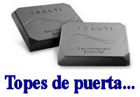

Estamos de acuerdo en que es difícil de entender
Un lector nos comenta sobre un tema problemático:
Seguramente se da usted cuenta de que Allison Dubois es sólo otra más de una larga fila de supuestos médiums psíquicos, pero esta gente está mejorando en su oficio y su influencia crece. Lo que me horroriza más que nada es el aire de legitimidad académica que recibe esta gente cuando son legitimados por el “laboratorio” de Schwartz en la Universidad de Arizona. ¿Qué diablos le pasa a la gente que dirige la Universidad de Arizona? Me doy cuenta de por qué la gente como Schwartz le hace este mal servicio a la ciencia y la educación, pero la gente que dirige la universidad y que permite este disparate tiene una responsabilidad aún mayor para con los estudiantes, el profesorado y la comunidad. ¿Por qué permiten que gente como Laurie Campbell tenga títulos como “Director del Comité de Investigación de la Mediumnidad”? Eso es más procupante que cualquier truco que pueda inventar un psíquico. He leído el texto altisonante en esta ubicación: http://www.president.arizona.edu/, y estoy aún más preocupado que permitan que continúe el tipo de tontería en la que Schwartz se regodea, y que el buen nombre de la Universidad de Arizona siga siendo mancillado con la supuesta investigación mediúmnica, amparada en la complicidad, que allí se desarrolla. El Consejo de Regentes y el Presidente de la Universidad de Arizona deberían avergonzarse de sí mismos. No están cumpliendo con sus deberes de funcionarios.
Le remití esto al Presidente de la Universidad de Arizona, Peter Likens, preguntándole si podría darme una respuesta. Escribió:
Lo que sea que usted o yo pensemos del programa de investigación conducido por el profesor Schwartz, él trabaja dentro del marco de referencia definido por la libertad académica. Los investigadores que siguen hipótesis falsas son corregidos finalmente por otros que intentan reproducir su trabajo y se dan cuenta de que no pueden. Así funciona la ciencia, y las universidades proporcionan el contexto para los avances vacilantes de la ciencia. No es mi papel como presidente proscribir el ámbito de la investigación científica a ningún profesor, y de hecho debo defender la libertad de preguntarse, apoye o no en lo personal las hipótesis aventuradas.
Saludos… Peter Likins
Esta es la carta que escribí en respuesta al doctor Likens:
Doctor Likins, estoy francamente sorprendido (gratamente) de haber recibido alguna reacción a mi requisitoria de la semana pasada. Estoy acustumbrado a enfrentar una pared de silencio de los académicos a los que interrogo, de ahí mi sorpresa de que se haya tomado usted el trabajo de responderme. Debo expresar mi agradecimiento de que se haya tomado l tiempo para darme una respuesta; esto indica que tiene usted alguna inquietud acerca del tema presentado, y ha reaccionado a sus responsabilidades como superior del doctor Gary Schwartz y como representante de la Universidad Estatal de Arizona.
Perdóneme, doctor Likins. Lo que sigue surge de mi reacción visceral a sus comentarios; no deseo parecer descortés o insensible, pero adelanto que mis lectores compartirán mi reacción a sus palabras, y también espero expresar los pensamientos de ellos. Como alguien no académico y aficionado, he escuchado varios cacareos entremezclados con esas correctas palabras. A mí me sonó como una fórmula recitada desde una torre de marfil. Permítame explicarme.
Cuando leo “libertad académica”, escucho un cacaero muy fuerte. Nadie que tenga un sentido de la conducta adecuada estará en desacuerdo con su respeto por ese principio y su invocación del mismo. Cabe preguntarse si las afirmaciones de Gary Schwartz merecen tal previsión. Le ruego que siga conmigo desde otro enfoque, seriamente, ya que trato toda esta discusión con la mayor importancia, aunque el ejemplo que presente sea frívolo.
Podríamos considerar al Ratón Pérez, a Papá Noel o los renos voladores, pero en lugar de ello consideremos un escenario muy simple que requeriría menos tecnología y recursos que largas vigilias nocturnas al lado de las camas, la medición de interminables chimeneas o el lanzamiento de bestias nobles desde acantilados. Supongamos que Schwartz “investiga” (como científico en representación de la Universidad Estatal de California) la pregunta de si 1117 más 4000 siempre da como resultado 5117. Diseña un protocolo que requiere obtener 1117 palillos de tamaño, peso y estructura cuidadosamente definidos, y 4000 bolitas metálicas seleccionadas e igualmente bien definidas. El experimento requiere mezclar concienzudamente estos objetos y luego contar el total de objetos en la mezcla.
Téngame paciencia, por favor. Tengo temas por discutir.
Al contar la masa resultante de palitos y bolas metálicas, el doctor Schwartz y sus laboratoristas hallan un total de 5115 (dos menos de los que se esperaban) y prepara y publica un informe formal de sus observaciones, un informe correctamente sometido a escrutinio y examinado por quienes lo firman con él, y que contiene una cantidad de notas al pie razonables sobre las características aceptadas de las bolas de metal y los palitos de madera.
No sólo estaría pasmado el mundo científico con tal resultado y consternado ante la vergüenza obvia que el resto de la universidad sufriría. Los medios de difusión, siempre ansiosos de alimentarse de novedades estrafalarias y de tener la oportunidad de reírse de esos fulanos extraños con guardapolvos blancos, presentarían al doctor Schwartz y sus colegas laboratoristas en televisión, en los periódicos sensacionalistas y en entremeses actuados.
Doctor Likins, ¿afirma usted seriamente que alguna vez habrá informes similares de “otros que [intenten] reproducir su trabajo”? Considere la afirmación que hace Schwartz: que la Universidad Estatal de Arizona tiene evidencia obtenida científicamente que prueba que cierta gente puede conversar realmente con los que han muerto, con aquéllos cuyos cuerpos físicos (incluyendo sus cerebros y sistemas nerviosos) han sido momificados químicamente o reducidos a cenizas. Nos estamos ocupando, no de hechos ni de la realidad, sino de fantasía. ¿Puede imaginarse a algún organismo de financiación responsable, formal y científico pidiendo apoyo para tal investigación, y preparándose para soportar el ridículo justificado que pesa sobre Gary Schwartz? La camarilla más cercana de Schwartz y el cuerpo general de científicos (desinteresados pero aún consternados) no cuestionarán sus acciones, pero existimos aquéllos que exigimos seriamente que se acepte alguna responsabilidad por permitirle a este hombre usar su posición para influir de esta manera al público.
No, doctor Likens, con todo respeto, así no es como “funciona la ciencia”, ya que ningún científico responsable irá en pos de esta quimera, y la “investigación” de Schwartz quedará, por lo tanto, quedará como referencia para quienes se engañan de que su universidad ha proporcionado pruebas de su más cara fantasía. Escribe usted que “las universidades proporcionan el contexto para los avances vacilantes de la ciencia”, pero en verdad no deberían brindar protección para las fantasías y las convicciones religiosas.
Señor, afirma usted que debe apoyar a Schwartz, y lo cito, “apoye o no en lo personal las hipótesis aventuradas”. Mi posición es que al no cuestionar las conclusiones a las que llega Schwartz, les brinda apoyo. Y, aunque usted afirma correctamente que debe “defender la libertad de preguntarse”, debería reconocer que a mí se me negó esa libertad, ya que el doctor Schwartz se ha retractado de su acuerdo con la Fundación Educativa James Randi (que estableció cuando vino a visitarnos en persona) de proporcionar los datos sin procesar que dieron origen a sus fantásticas conclusiones. Aunque por supuesto usted no tiene obligación alguna de actuar para nosotros en este asunto, puee haber otros que crean que podría (y debería) hacerlo.
El doctor Schwartz puede haber realizado investigaciones correctas, definitivas y útiles sobre las capacidades de artistas del espectáculo bien pagados e infames para convencer a sus víctimas vulnerables de que pueden traer mensajes de los muertos. En su visita a las oficinas de la JREF, expresó su evidente regocijo ante el protocolo práctico y afinado que sugerí para el examen que planeaba hacerle a estos “psíquicos”, y aunque aclaró (como hace invariablemente) que yo no estaba equipado con sus credenciales académicas, no sólo dijo que emplearía ese protocolo, sino que nos proporcionaría los datos sin procesar obtenidos para que los examináramos. Esa promesa nunca se cumplió. ¿Por qué?
Además, hace poco me equivoqué al endilgarle a Schwartz a la Universidad del Estado de Arizona en Tempe. Su estrafalaria corte de los milagretes reside en la Universidad de Arizona en Tucson.
Perjuicio para los medios

Nuestro amigo Ian Rowland nos cuenta:
Aquí en el Reino Unido, como bien sabrá, uno de nuestros periódicos más vendidos es el Daily Mail. Actualmente están realizando una promoción especial que requiere coleccionar cupones durante algunas semanas. Con el tiempo podrán canjearse por un horóscopo personalizado gratuito preparado por Jonathan Cainer.
Randi: Vea http://www.randi.org/jr/070204another.html#2, http://www.randi.org/jr/022004demons.html#13 (y su traducción), http://www.randi.org/jr/040204orange.html#3 (y su traducción) y http://www.randi.org/jr/040904that.html#3 (y su traducción) para saber más sobre Cainer.
Esta parece ser la principal ofensiva de mercadeo de Año Nuevo del Mail (dándole una nueva ambigüedad a la palabra “ofensiva”) y está recibiendo una intensa publicidad por medio de avisos televisivos.
Así que aquí estamos, a cinco años de comenzado el siglo XXI. Ya no quemamos brujas en la hoguera ni intentamos tratar la parálisis cerebral “expulsando demonios”, pero un importante períodico quiere dedicar literalmente millones de libras a una promoción basada en la astrología. Ah, y mencionan que el descubrimiento de un nuevo planeta tiene apasionantes implicaciones para el horóscopo de todos. Esto no tiene sentido siquiera si uno cree en la astrología, a menos que el planeta sólo empezara a existir una vez que fue detectado.
Randi: vea http://www.randi.org/jr/032604why.html#3 (y su traducción) para ver una referencia a este apasionante planeta nuevo, obviamente crucial.
Bueno, seguimos… Tenía que llamar a mi banco hoy para verificar uno o dos detalles. La chica que atendió el teléfono tenía que hacerme una o dos preguntas sólo para verificar mi identidad. Primero me preguntó los últimos tres dígitos del teléfono de mi casa. Hasta ese momento, todo bien. Luego me pidió que le confirmara MI SIGNO ZODIACAL. Randi, usted sabe que tengo un buen sentido del humor, y puede pensar que me estoy burlando de usted o lo estoy inventando. Ojalá. Pero no, realmente pasó. Y era el banco Barclays, uno de los “cuatro grandes” aquí en el Reino Unido. Así que, si quiere invertir de forma segura su dinero y que lo custodien los sabios y buenos… elija un banco que crea que la astrología tiene algún valor. Al menos suficiente valor para preguntarles a los clientes su signo zodiacal en lugar de, por ejemplo, preguntarles sólo su “fecha de nacimiento”. A propósito, me negué. Le dije: “No le confirmaré eso porque la astrología es basura, pero puedo confirmarle mi fecha de nacimiento, que es…”.
Quizá es tiempo de rendirse, tirar la toalla y darse cuenta de que a esta basura no se le puede ganar. Ganó, todos nosotros perdimos.
No, creo que no, Ian, aunque puedo comprender totalmente tu consternación. Si pudieras compartir con nosotros en la JREF las cartas de agradecimiento que recibimos con frecuencia, pensarías distinto. Ver la cháchara que generalmente nos presentan la TV y los medios y saber cuántos supuestos científicos están por ahí dando apoyo a todo, desde máquinas de energía libre a tratamientos pseudomédicos, puede ser descorazonador, pero al enterarse de gente joven que se prepara para suplantar a esta generación, nos sentimos esperanzados.
No nos queda otro remedio.
Comentarios de The Guardian
Catherine Bennett, en el periódico The Guardian (del Reino Unido) hace comentarios adecuados sobre la falla de los psíquicos y los astrólogos de trabajar como se esperaba de ellos. Vea http://www.guardian.co.uk/g2/story/0,,1383999,00.html [en inglés].
Tope de puerta muy caro
Nunca dejen de dar el crédito a quien se lo merece cuando se descubre un dispositivo estúpido realmente funciona, no importa cuán poco, les digo en relación con el descubrimiento del lector Bill Matkovich. Escribe Bill:
Mi abogado, a quien he revelado la verdad sobre el audio, ha encontrado un uso útil para sus Piedras Shakti. Ahora se usan para dejar abierta una puerta que tiene la tendencia a cerrarse sola.
Invención útil de hace mucho tiempo
Una de las experiencias que disfruto cuando examino la superlativa colección de libros de un importante auspiciante y amigo de la JREF es encontrarme o que me muestren (como hicieron con éste) un artículo encantador que pide a gritos que se lo informe. En la primera edición de “The Whetstone of Witte”, 1557, escrito por “Robert Recorde, médico”, encontramos la invención de algo que todos hemos usado, aunque ahora en una forma trunca de su intención original:
Y para evitar la tediosa repetición de las palabras “es igual a”, usaré, como hago con frecuencia en mi trabajo, un par de líneas paralelas o gemelas de la misma longitud, así: =========, porque no hay dos cosas que puedan ser más iguales.
Recorde, lamentablemente, murió preso por deudas en la prisión King’s Bench.
Más pseudomedicina en China
Ha llegado una carta alarmante de un amigo que vive en China. Es maestro en Shanghai, y nos informa sus observaciones mientras se desenvuelve en el Lejano Oriente:
En viajes recientes por Seúl y varias ciudades de Japón, me ha alarmado el aumento de popularidad del fenómeno del “tipo sanguíneo”, que ahora se está extendiendo a China.
Randi: El corresponsal se refiere aquí a la noción curanderil, muy popular en Corea, que la atención reciente de los medios ha enfatizado especialmente. Se afirma que el tipo sanguíneo de una persona indica su carácter. ¿Recuerdan que aquí en los Estados Unidos, hace años, pensábamos que lo indicaba el color de la piel? Los que sufren el peor impacto de este disparate sanguíneo son los que tienen sangre de tipo “B”. La popular canción “Hombres de tipo B” de Kin Hyun-Jung salió a principios de este año, y se dice que una película titulada “Mi novio es de tipo B” está en producción y se estrenará en febrero. Incluso hay un libro diciéndole a las mujeres si deberían salir con los “coquetos” hombres de tipo B. Todo es muy divertido hasta que empieza a tomárselo en serio, y en Corea se lo toma en serio. En una encuesta online reciente que preguntaba a unos 88000 interrogados si creían que la evaluación de personalidad por el tipo sanguíneo es exacta, el 88% respondieron positivamente diciendo “sí, hasta cierto grado”, o “algo”. Mi corresponsal continúa diciendo:
Ha crecido hasta el punto en que ocupa un horario central en la televisión nacional de Japón. Inspirado por el absurdo increíble por esta madre de todas las pseudociencias y alarmado por la industria comercial que ha surgido, he empezado a escribir un ensayo sobre ella tanto en inglés como en chino y japonés con la esperanza de llegar a unos pocos jóvenes de mente abierta que sientan que se ahogan en un mar de locura supersticiosa. ¿Quiere leerlo cuando lo termine? Estoy en la etapa de retoques y de comprobación de hechos y fuentes.
Randi: puede que tengamos la buena suerte de ver ese ensayo aquí mismo en nuestra página web…
Sabe usted muy bien que Asia en general tiene tremendos problemas en este sentido, así que sabe que seguiremos ocupados. Incluso se está convirtiendo en una discusión frecuente el obtener la atropina y otros medicamentos que necesito para mi corazón: tengo que insistir, hasta el punto de llegar casi a la frustración muda, que necesito los medicamentos reales y no la “raíz de hinojo” o los ojos desecados de pez (inserte aquí otras plantas secas y plantas secas de animales, igualmente vagas y sin efecto) que insiste en publicitar de vez en cuando mi químico local (supongo que los márgenes de ganancia son mucho mejores que los de vender productos Bayer, Pfizer, etc.). Esta es una práctica alarmante y peligrosa, especialmente ya que los chiflados, con cada vez más éxito financiero, ahora emplean avisos televisivos bien producidos y enormes carteleras y cartelones con actores cinematográficos populares. Incluso hay una nueva serie de máquinas: todas con diales, medidores y sondas vistosos en relucientes cajas nuevas que se venden como pan caliente, aunque no tienen más que zumbadores, electroimanes y osciladores de alta frecuencia para hacer cosquillas en la piel, al igual que los dispositivos igualmente chiflados producidos en la década de 1930.
Caray, realmente parece que damos un paso adelante y dos atrás al examinar nuestros esfuerzos del pasado, pero sigo con energía cuando pienso en las brillantes mentes jóvenes de la Universidad Médica de Shanghai (por ejemplo) que tienen sed de verdad y realidad. Cuando continúe mis conferencias allí el próximo otoño, tendré una nueva tanda de historias esclarecedoras para ellos, incluso para los muchos doctores de Medicina China Tradicional que asisten a las clases.
Hum. ¿Sedientos de verdad y realidad? Creo que China necesita otra visita de la JREF.
Error
Hace poco me referí aquí a los rusos como “soviéticos”. Ese término fue tomado directamente del artículo noticioso que vi, y obviamente es incorrecto. ¡Ya no hay más soviets!
En conclusión…
Esta página web le llega a nuestros lectores mientras estamos ocupados en Las Vegas con The Amaz!ng Meeting 3, así que es bastante corta. El personal de la JREF trabajó seriamente para ponerse a tono con el exceso de registraciones inesperado (¡pero muy bienvenido!), que al momento de escribir esto es de 540 y crece. Sólo podemos pregutnarnos cuán grande será el encuentro del año próximo…

Nuestro agradecimiento a Michael Shermer y la Skeptics Society, quienes proporcionaron su lista de correos para que la usáramos para publicitar el encuentro este año, y cooperaron estrechamente con nosotros en muchos aspectos, como siempre. Trabajamos para una conexión aún más cercana entre la JREF y el grupo de Michael, para fortalecernos a ambos para que podamos responder a los desafíos que crecen en número e importancia día a día. Internacionalmente, como pueden ver más arriba en relación con China, hallamos que la amenaza de la irracionalidad y la superstición amenaza nuestra seguridad, ya sean fanáticos que sacrifican sus vidas para entrar a su versión escogida de paraíso, o académicos que abandonan su conocimiento de la ciencia en favor de sus nociones favoritas de magia que afirman examinar en laboratorio.
Gracias a todos ustedes por hacer posible la JREF.

Comentarios
Comments powered by Disqus